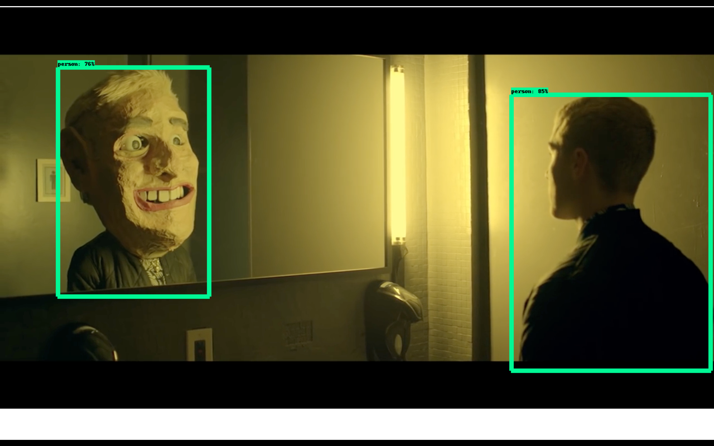
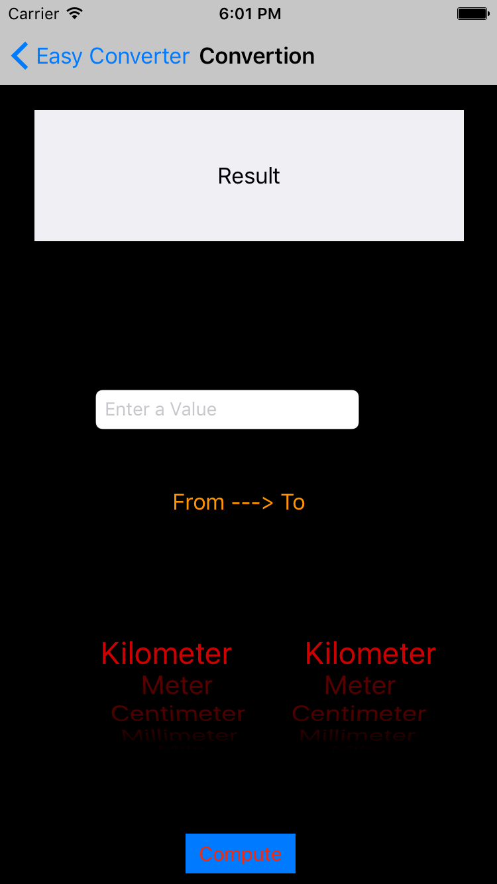

I am an international student from India currently a senior, studying Computer Science at the University of Wisconsin Madison. I transferred to UW from the University of Illinois at Chicago in my junior year. I am currently working as an undergraduate research assistant at the Human Computer Interaction Lab of UW. For my research, I made a chatbot simulator which creates transition systems based on IBM Watson chatbot designs and check for design flaws in them. Similarly, I am really interested in Artificial Intelligence and Machine Learning and that is one of the reasons why I choose IBM Watson for research. Besides that, I am a very social person, always open to new ideas and a great team player.
In my free time I like to learn something new in Computer Science. It could be anything from developing an application to learning a completely new programming language. Apart from that, I have many projects outside class work, including web development projects and IOT projects. Moreover, I love doing adventure sports like snowboarding, skydiving and longboarding.
University of Wisconsin Madison
Graduated
University of Illinois at Chicago
Transferred
Human Computer Interaction Lab, University of Wisconsin Madison.
• Build Chat-bots in IBM Watson Conversation.
• Automate Finite Transition System generations from JSON files.
College of Psychiatry, University of Wisconsin Madison.
• Resolve network issues wired and wireless.
• Troubleshooting computer issues and solving technical problems.
• Fixing problems in the network stack.
• Have communications with users over email, telephone, and in person.
Athletics Department, University of Wisconsin Madison
• Provided customer services to people who come for the events.
• Help the security to maintain a safe environment.
Engineering Media Services, University of Illinois at Chicago
• Design, develop, test and maintain PHP MySQL web applications.
• Develop and Test Surveys done in Qualtrics.
College of Engineering, University of Illinois at Chicago
• Build computers for the engineering staff.
• Conducted meetings with the business administration regarding a web application.
Institute of Palliative Medicine, Medical College, Kerala
• General question enquiries and taking messages.
• Drafting letter, collecting, sorting and filing personal records.
Java
C
Python
MYSQL
Node.js
Swift
Php
HTML
Javascript
C#
CSS
C++
Desert Object Recognition And Avoidance

Video Object Detector
Buffer Manager

Easy Converter
Smart Home (IOT Project)
Airport travel Network
Chrome Extension
Maze Solving
Web Server using LAMP on a raspberry pi 3